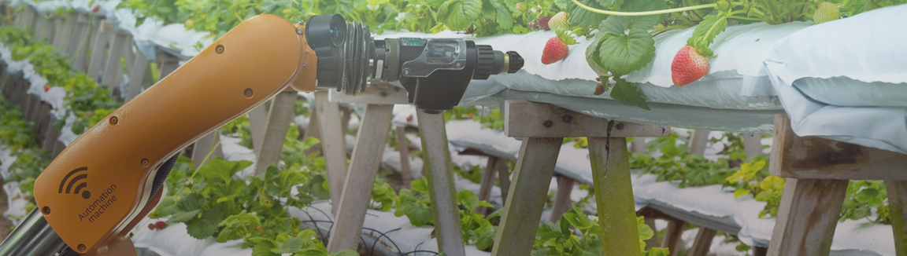

Sobre o projeto
O iWater é uma solução de IoT para irrigação e monitoramento de plantas / reservatórios, desenvolvida usando kits de desenvolvimento Arduino / Raspberry PI.
Ele rastreia a temperatura, a umidade do solo, a umidade do ar e a distância da água do aparelho de irrigação por meio de tópicos criados usando uma API que faz a comunicação com o equipamento, pode ser acessado independentemente da plataforma (PC, celular, tablet ...).Este projeto é a entrega de um software para a aula de IOT oferecido na Faculdade Meridional - IMED pelo professor Everton de Matos
Para imagens da configuração real de hadware usada ao longo do tempo / aplicativos, visite a seção Fotos.